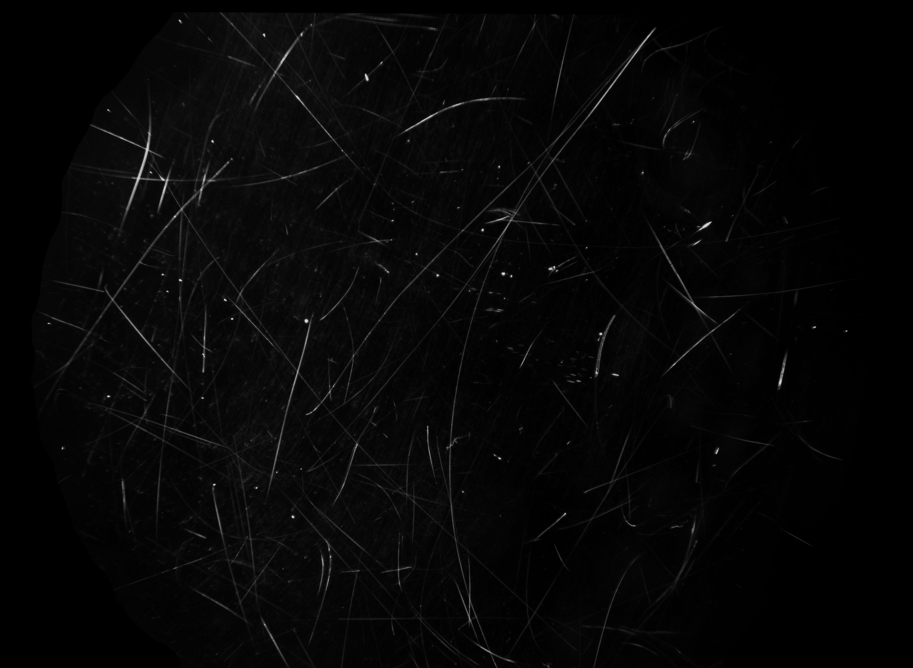

智能识别准确率测试大纲
本大纲保持“磨损识别准确率”作为统一的测试指标名称，以单图像一致性判定 δi 为基础进行统计。算法版本与数据集版本的后续更新不改变本大纲的适用性。
1 主题内容和适用范围
1.1 主题内容
本大纲用于指导第三方测试机构对“离焦微结构镜片磨损智能识别任务”中“磨损识别准确率”指标开展测试。大纲规定了测试目的、测试依据、测试组织管理、测试流程、测试用例和测试对象、测试环境、测试方法和步骤以及测试留痕要求，作为委托测试和结果判定的依据性文件。
本大纲仅围绕课题任务书中“2.1 磨损识别准确率”相关内容编制，不扩展至其他功能指标、性能指标或研究性分析内容。
1.2 适用范围
本大纲适用于项目“青少年近视防控功能镜片关键参数计量技术研究”下，课题“离焦微结构镜片磨损程度检测及关键参数评估研究”中智能识别任务形成的软件产品或算法系统的第三方测试。
本大纲适用于对测试图像中磨损识别结果进行准确率测试。智能磨损识别算法只要能够针对磨损镜片图像给出可与基准结果进行对应比较的识别结果，均可依据本大纲开展测试。
本大纲规定统一的测试原则、统计要求和结果形成方式。测试所采用的图像数据、基准结果、统计规则和判定阈值，以测试实施阶段经委托测试文件确认的版本为准。算法版本、数据集版本及其更新不改变本大纲的适用性。
2 测试目的
测试目的是验证智能磨损识别算法在规定测试图像集上对镜片磨损目标的识别结果，与人工确认并冻结的基准结果之间的一致程度是否达到委托测试文件规定的要求，并形成可供委托方、测试机构及验收使用的客观测试结论。
本测试仅针对“磨损识别准确率”指标开展，不涉及缺陷机理分析、缺陷分级评估、复杂区域成因解释及其他扩展性研究内容。
3 测试依据和引用文件
GB/T 25000.51-2016《系统与软件工程 系统与软件质量要求与评价（SQuaRE） 第 51 部分：就绪可用软件产品（RUSP）的质量要求和测试细则》；GB/T 38634-2020《系统与软件工程 软件测试》系列标准中与测试过程、测试用例设计和测试执行相关的条款；GB/T 41864-2022《信息技术 计算机视觉 术语》；- 《青少年近视防控功能镜片关键参数计量技术研究》项目任务书（项目编号：2024YFC2419500）；
- 《离焦微结构镜片磨损程度检测及关键参数评估研究》课题任务书（课题编号：2024YFC2419504）。
当本大纲与具体委托测试文件、合同要求或任务书明确条款存在差异时，以后者的明确要求为准。
4 测试组织管理和流程
4.1 测试组织管理
测试组织管理应体现独立、客观、可追溯和可重复执行的原则。
- 委托方负责提交送测算法、测试图像集、基准结果和必要说明。
- 测试机构负责实施测试、核验结果并形成测试结论。
- 技术配合方负责部署支持和问题说明，不参与正式结果判定。
测试资料、运行条件和结果记录应能够相互对应，便于复核。
4.2 测试流程
测试一般按以下顺序开展：
- 确认送测资料；
- 核验测试环境；
- 执行正式测试并保存结果；
- 核验结果，必要时进行重复性核验；
- 归档自动生成的日志、截图、溯源信息和测试报告。
若出现算法无法运行、数据读取失败或结果无法复现等情况，应记录原因和处理情况，并在测试报告中说明。
5 测试用例和测试对象
5.1 磨损镜片图像
本大纲以单张磨损镜片图像作为基本测试单元。正式测试使用的图像应来自经确认的测试图像集，并与基准结果一一对应。

图像清单宜采用结构化文件，记录图像标识、文件路径和对应基准结果版本。正式测试前应完成图像、基准结果和图像清单的一致性核对。
5.2 智能磨损识别算法
本次接受测试的对象为智能磨损识别算法。算法应能够读取规定格式的磨损镜片图像，并输出可用于统计和核验的识别结果。
- 算法名称、版本号及交付形态；
- 运行方式和必要配置；
- 输入输出说明及结果保存方式；
- 必要的运行条件说明。
算法输出结果应与图像标识保持一致，便于逐图像核验。同一次正式测试和重复性核验中，算法版本和配置不得变更。
6 性能指标测试
6.1 测试说明和要求
本次测试项目为“磨损识别准确率测试”。测试时，以识别结果与基准结果的一致程度作为评价依据。
表 1 测试项目汇总表
| 测试项目 | 测试目的 | 结果形式 | 评价指标 |
|---|---|---|---|
| 磨损识别准确率 | 验证识别结果与基准结果的一致程度 | 逐图像比较与统计 | 磨损识别准确率 |
同一次测试应采用统一的测试图像、基准结果、统计规则和判定方式。正式测试前，应登记测试图像集版本、基准结果版本、图像总数 N 和异常样本处理方式。
如需进行重复性核验，应在相同条件下进行，两次结果之间的主指标差值应满足委托测试文件规定的一致性要求。
6.2 测试环境及条件
测试环境应满足算法正常运行的要求，并具备稳定、可复现和可重复执行测试的条件。
正式测试前，应确认输入输出路径、配置文件和访问权限满足测试要求，并保证结果和日志能够完整保存。正式测试与重复性核验应在一致的运行条件下完成。
6.3 测试方法和步骤
6.3.1 指标统计公式
设纳入本次统计的图像总数为 N。对第 i 张图像，记算法输出结果为 Ri，对应基准结果为 Gi，其单张图像判定结果为 δi。
当第 i 张图像的识别结果满足本次测试确认的判定规则时：
当第 i 张图像的识别结果不满足本次测试确认的判定规则时：
则总体磨损识别准确率 A 按下式计算：
式中：
N为纳入统计的图像总数；Ri为第i张图像的算法输出结果；Gi为第i张图像对应的基准结果；δi为第i张图像的单张图像判定结果；A为总体磨损识别准确率。
具体判定规则应由委托测试文件明确。
6.3.2 一致性判定规则
δi 的具体定义应在正式测试前明确，并在同一次测试中保持一致。判定规则宜明确比较方式、对应阈值以及异常样本处理原则。
6.3.3 测试实施步骤
- 核对测试图像集、基准结果、图像清单以及算法版本和配置文件；
- 确认测试环境满足运行要求，并保持测试条件一致；
- 对全部图像执行正式测试，保存原始结果、统计结果和日志；
- 依据判定规则逐图像计算
δi，并按公式计算总体磨损识别准确率A； - 必要时在相同条件下进行重复性核验，并比较两次结果差值；
- 归档自动生成的日志、截图、溯源文件和测试报告。
6.3.4 结果输出物清单
- 图像清单和基准结果版本登记；
- 算法与配置文件版本登记；
- 正式测试原始结果、统计结果和运行日志；
- 重复性核验结果和日志（如有）；
- 异常样本记录（如有）；
- 自动生成的日志、截图、溯源文件、交付清单和正式测试报告。
6.3.5 判定原则
本大纲规定统一的测试对象、测试内容、测试方法和统计公式框架，不在正文中固化具体达标阈值。是否通过测试，应以磨损识别准确率 A 与任务书、委托测试文件或测试实施细则中规定的阈值比较后确定。